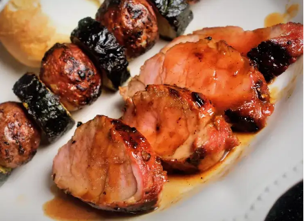

Marinated Grilled Pork Tenderloin

Description
This marinated pork loin cooks up nicely on the grill. It tastes best when marinated for 24 hours.
Ingredients
- ¼ cup honey
- ¼ cup soy sauce
- ¼ cup oyster sauce
- 2 tablespoons brown sugar
- 4 teaspoons minced fresh ginger root
- 1 tablespoon ketchup
- 1 tablespoon minced garlic
- ¼ teaspoon cayenne pepper
- ¼ teaspoon ground cinnamon
Steps
- Preheat an outdoor grill for high heat and lightly oil the grate.
- Meanwhile, combine ground beef, onion, cheese, egg, onion soup mix, minced garlic, garlic powder, soy sauce, Worcestershire sauce, parsley, basil, oregano, rosemary, salt, and pepper in a large bowl. Use your hands to form the mixture into 4 patties.
- Cook patties on the preheated grill until no longer pink in the center and the juices run clear, about 4 to 5 minutes per side. An instant-read thermometer inserted into the center should read at least 165 degrees F (74 degrees C).